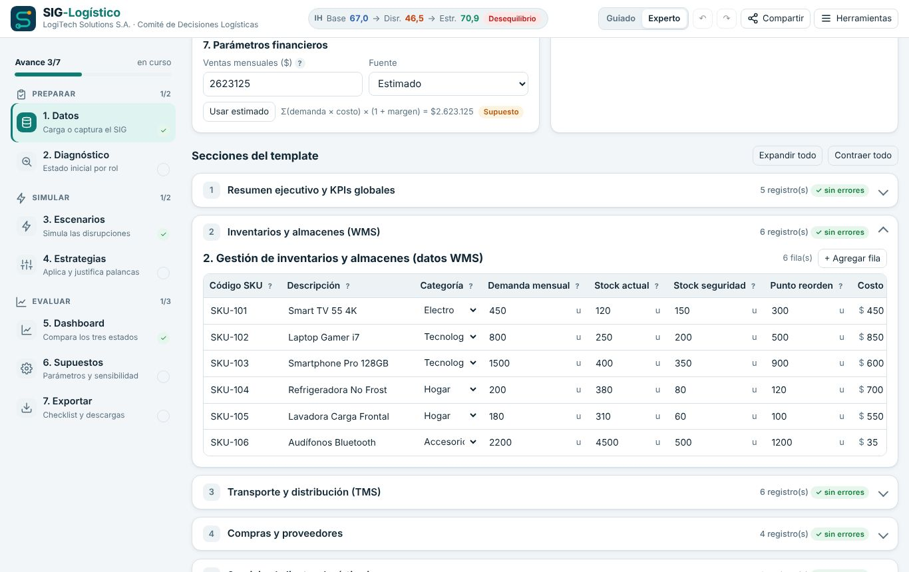
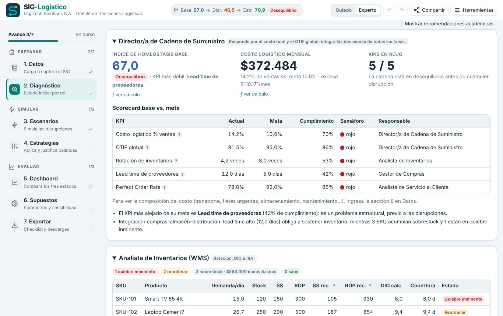
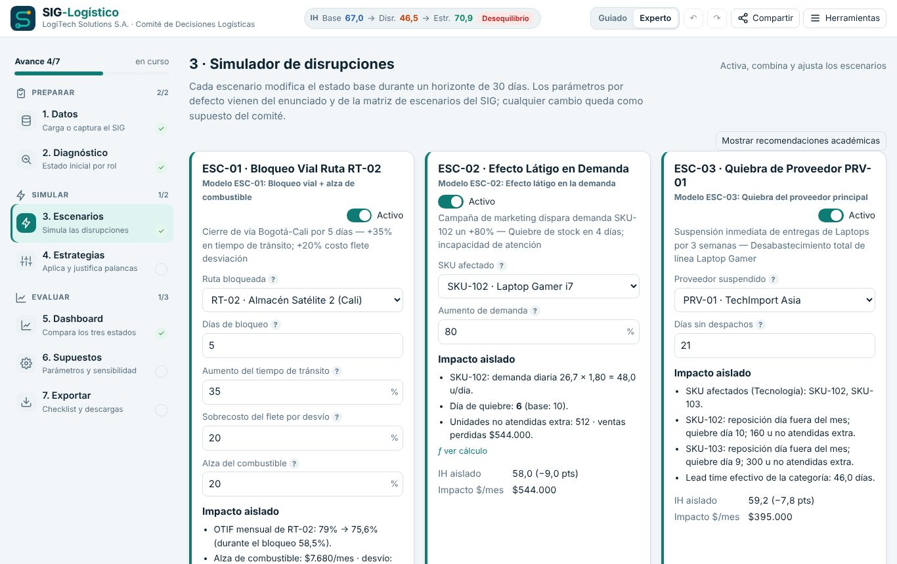
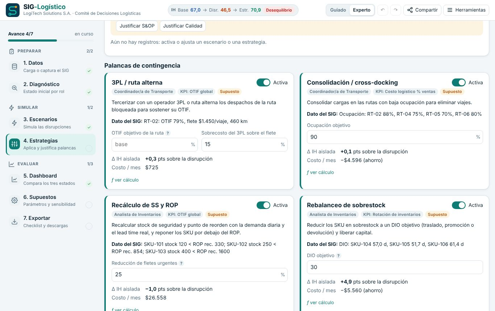
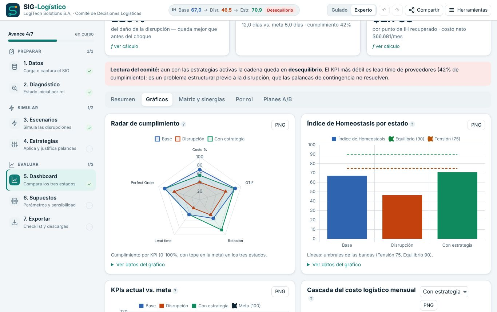
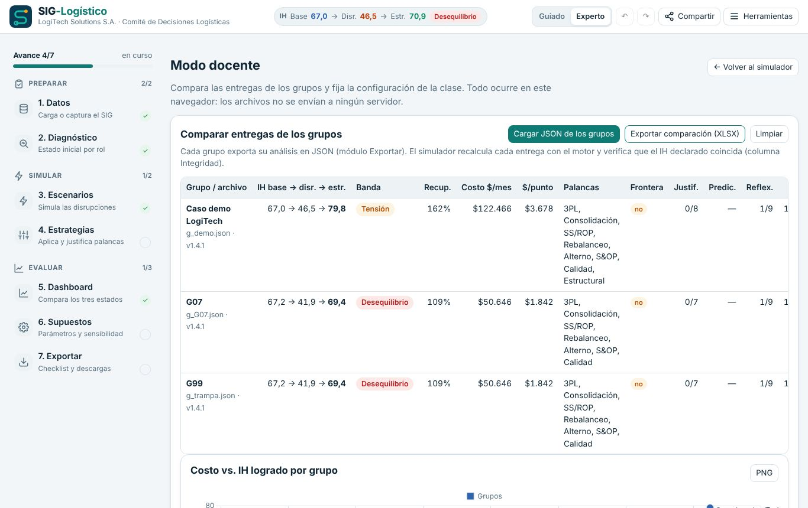

Decide como un comité logístico y devuélvele el equilibrio a la cadena de suministro
El SIG-Logístico convierte los datos de un Sistema de Información Gerencial en decisiones: diagnosticas la operación de LogiTech Solutions S.A., simulas disrupciones reales y comparas estrategias con un indicador de homeostasis.
Aprender a decidir con datos, no con intuición
Un SIG logístico (ERP, WMS, TMS) solo agrega valor cuando sus cifras se convierten en decisiones coordinadas entre áreas. El simulador hace visible ese puente.
Entender el SIG
Lee los KPIs del ERP, WMS y TMS: OTIF, rotación, DIO, lead time, fill rate, Perfect Order y costo logístico.
Medir el impacto sistémico
Simula un bloqueo vial, un efecto látigo y la quiebra de un proveedor, y observa cómo se propagan entre áreas.
Decidir y justificar
Combina estrategias, compara su costo con la recuperación que logran y defiende cada decisión con un dato del SIG.
Comprender cómo un Sistema de Información Gerencial en logística respalda la planificación, la mitigación de riesgos y la toma de decisiones estratégicas para optimizar la cadena de suministro, garantizar la eficiencia operativa y maximizar el nivel de servicio al menor costo global posible.
Tres fases, siete pasos
El simulador sigue el orden del entregable. En modo guiado te muestra una tarea por paso; en modo experto, todas las herramientas.
Carga los datos del SIG
Usa el caso demo, genera la variante de tu grupo con un código o carga el CSV del formulario de captura. Cada sección se valida y muestra su estado.

Diagnostica por rol
Cada rol ve sus KPIs frente a la meta, el semáforo y el Índice de Homeostasis base. El simulador señala el KPI más débil y los hallazgos de calidad de datos.

Simula las disrupciones
Activa el bloqueo vial con alza de combustible, el efecto látigo y la quiebra del proveedor. Antes de cada simulación predices el efecto y luego lo comparas.

Aplica estrategias y justifícalas
Siete palancas de contingencia y un plan estructural, cada una con parámetros, costo y rol responsable. La bitácora registra cada decisión con su justificación.

Evalúa y exporta
El tablero compara Base, Disrupción y Con estrategia con 10 gráficos, la matriz de decisiones y las sinergias. Exporta Excel, JSON y un borrador del informe en Word.

LogiTech Solutions S.A.
Empresa ficticia que distribuye tecnología y electrodomésticos desde un Centro de Distribución en Bogotá hacia tres almacenes satélite.
Los problemas de LogiTech
- Entregas tardías o incompletas que afectan la reputación con grandes cadenas y clientes finales.
- Inventario desbalanceado: sobrestock en productos de baja rotación y quiebres en los de alta demanda.
- Fletes urgentes y sobrecostos de transporte no planificados.
- Poca integración entre compras, almacén y distribución.
El caso es ficticio y tiene fines académicos. Cada grupo puede generar una variante propia, de dificultad equivalente, a partir de un código.
Cinco miradas, una sola cadena
Cada estudiante asume un rol. El simulador prioriza su información sin perder la visión sistémica.
Director/a de Cadena de Suministro
¿Qué combinación restaura el equilibrio al menor costo?
Analista de Inventarios (WMS)
¿Dónde sobra y dónde falta inventario?
Coordinador/a de Transporte (TMS)
¿Cómo sostengo las entregas si se cierra una vía?
Gestor/a de Compras
¿Qué tan expuestos estamos a un proveedor?
Analista de Servicio al Cliente
¿Cuántos pedidos llegan perfectos al cliente?
Comité completo
La organización como un sistema que se autorregula.
Índice de Homeostasis
Resume en una cifra de 0 a 100 qué tan equilibrada está la cadena. Combina el cumplimiento de los cinco KPIs frente a su meta, con tope en 100%: sobrecumplir un KPI no compensa el deterioro de otro.
Es un indicador propuesto por el comité (no proviene del documento de la actividad), inspirado en el concepto de homeostasis de Cannon (1932). Sirve para comparar estados del mismo caso, no empresas entre sí.
Estado inicial: el KPI más débil es el lead time de proveedores (12 días frente a una meta de 5).
Todo lo que pide el entregable
- Diagnóstico inicial por rol, con hallazgos de calidad de datos y brechas de información.
- Dashboard integrado con 10 gráficos exportables en PNG.
- Matriz de decisiones con el dato del SIG, el KPI, el costo, el efecto en el IH y la justificación.
- Evaluación de sinergia y homeostasis: recuperación, costo por punto de IH y contingencia vs. estructural.
- Borrador del Informe Ejecutivo en Word con tus cifras y gráficos, listo para completar con la interpretación del comité.
- Excel y JSON del análisis, bitácora de decisiones, autoevaluación y rúbrica.

Prepara la clase y revisa las entregas
- Link de la clase: fija supuestos, pesos del IH, parámetros de los escenarios o el modo de trabajo para todos los grupos.
- Variantes por grupo: cada código genera un caso distinto, reproducible y de dificultad equivalente.
- Comparación de entregas: carga los JSON de los grupos; el simulador recalcula cada uno y verifica su integridad.
- Rúbrica integrada con nivel sugerido según la evidencia del proceso.

Antes de empezar
¿Necesito crear una cuenta o instalar algo?
No. El simulador funciona en el navegador, en computador o celular. Para clases sin internet hay una versión de un solo archivo que se descarga desde el módulo Exportar.
¿Dónde quedan mis datos?
Solo en tu navegador. Ningún dato se envía a un servidor. Para llevar tu análisis a otro equipo, descarga el JSON o copia el link del análisis.
¿Qué diferencia hay entre el modo guiado y el experto?
El guiado muestra una tarea por paso y oculta las herramientas avanzadas (costos detallados, optimizador, planes A/B y sensibilidad). El experto muestra todo. Puedes cambiar en cualquier momento.
¿Puedo usar los datos de mi empresa?
El simulador está pensado para el caso académico. No ingreses datos reales de empresas sin autorización.
¿Quién puede usarlo?
Cualquier estudiante o docente, libremente, con fines académicos y educativos. Cualquier otro uso requiere autorización escrita de AI HYPERPLANE S.A.S.
¿Listo para tomar la primera decisión?
Empieza con el caso demo en modo guiado. Toma unos minutos entender el recorrido completo.